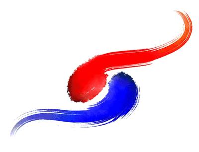
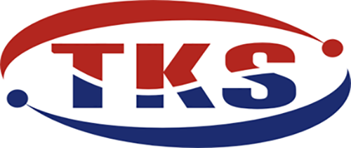

CI소개

- 본래 태극이란 우주만물이 생기기 이전의 공허하고 혼돈된 생태를 태극(太極)이라하고
- 공간적으로는 클태(太) 덩어리극(極) 큰덩어리라는 뜻이고 시간적으로는 "처음태, 끝극" 이라고도 하니
- 처음 시작부터 끝까지란 뜻을 내포하고 있습니다.
- 또한 태극을 근본으로 음,양의 조화로 운주 만물의 생성되었기에 모든일의 시작작이고 으뜸이면 중심이되어
- 스스로를 창조하고 발전시키며 번성하고 번창한다는 뜻도 있습니다.

- 태극철강㈜ SIMBOL MARK는 태극문양을 형상화하여 영문 Tae Keuk Steel의 약자로
- TKS 문자에도 음,양의 조화로 태극철강㈜ 역동하는 모습을 담고자 하였습니다.
- 양쪽점은 음,양의 기운이 시작이 있으면 끝이있고 또다시 시작을 의미하며
- 태극철강㈜ 모든일에 시작이 곧 끝이요 끝이 다시 시작이라는 마음으로
- 태극철강㈜, 임직원 모두가 스스로 새로운 기술과 영량을 개발하고 발전하여 번성하고 번창하자는
- 의미를 내포하고 있습니다.